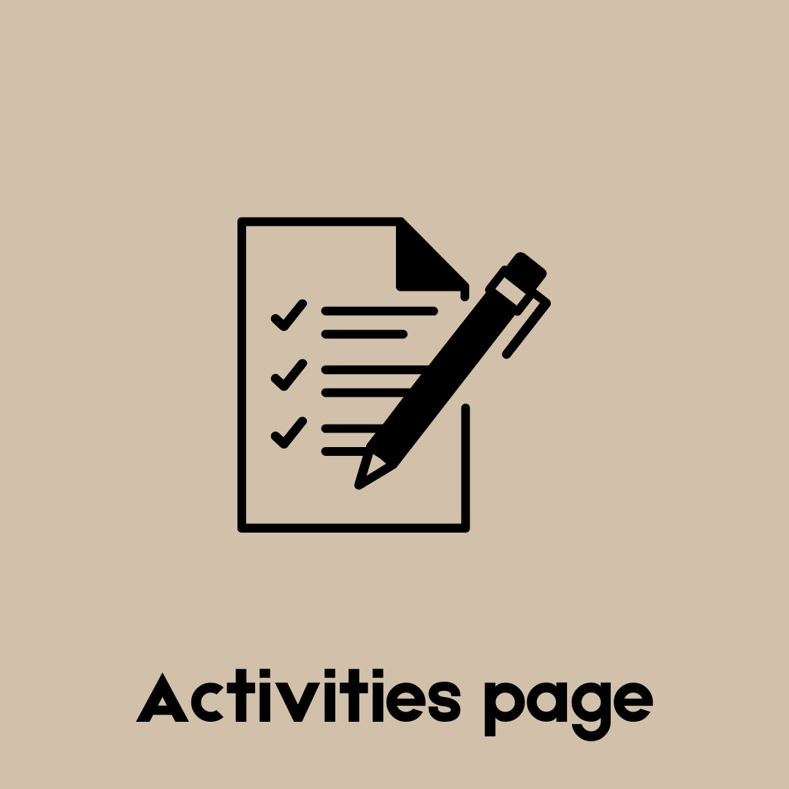
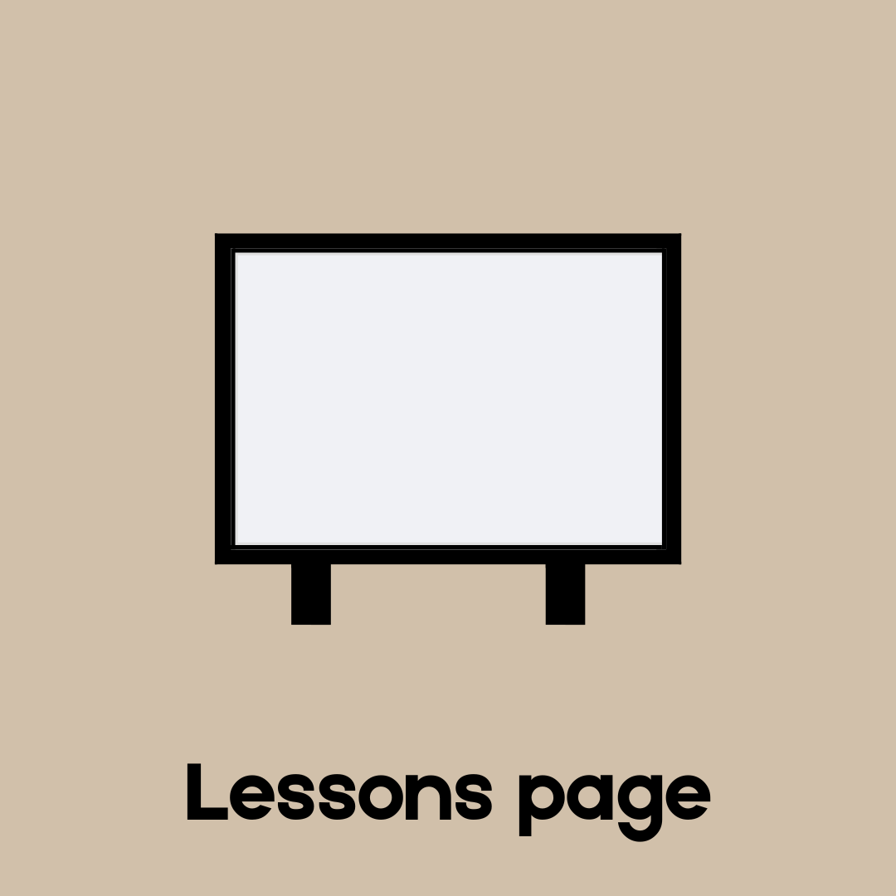

Pages |
|  |
|  |
 |
PLAY ME Life force | Ptasinski&Rj Pansin |
The Fourth Quarter |
| Welcome back! As you will see here, this is my portfolio for the fourth quarter! |
| Hello! As the all the quarters close, this is my final portfolio! Yes, it is still me, Julianrei F. San Luis. My life's gotten a bit tricker and harder, but I've been pushing through. I've been more proficient with writing too!, I've also taken ICT a bit more seriously this quarter, and overall, I'm pretty happy as I think I've fulfilled my role in this grade. If you look at the bottom of the "pages" column, you may revisit my last portfolio which will then give you a chance to go to my first one! And I'm.. still 14, cheer! (●'◡'●) |
| REFLECTION |
| I'm placing this reflection here so that you guys can see it faster. This year has really taught me a lot about myself. I know that I'm naturally impatient, but those hands ons got me counting every single minute. I know I don't work hard enough, but I still crank my butt off even making just notes for my friends and I. I know that I'm still struggling, and I know that coding is not and may never be my strong suit, but just know Ms, thank you |
Background is from Oxford.